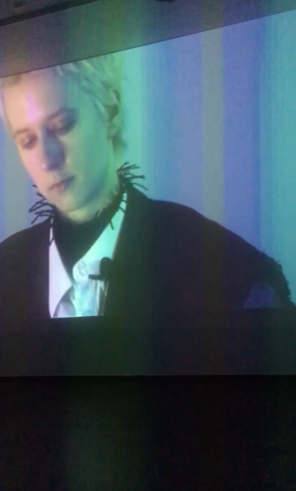
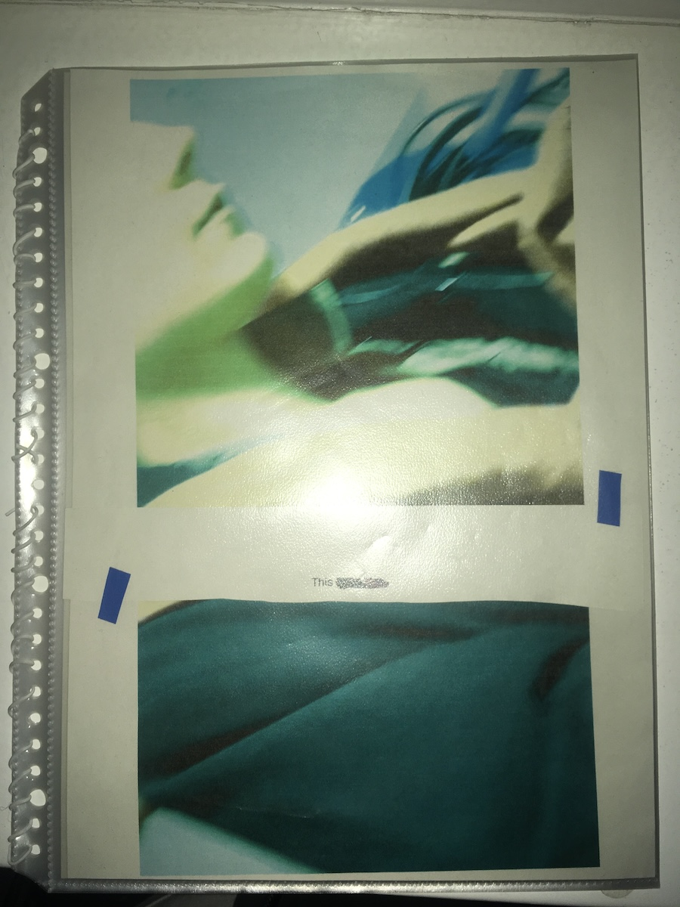

  Postproductions at studiengalerie-1357 The Institute for Scene Experiments was an ongoing project exploring the properties, limits, and possibilities of scenes in film and cinema, my participation started as actor in a workshop art KW in Berlin in 2022. At studiegalere-1357, I presented work in from of a video edit from the workshop and a collage work in form of a pamphlet with text and images, 2023.